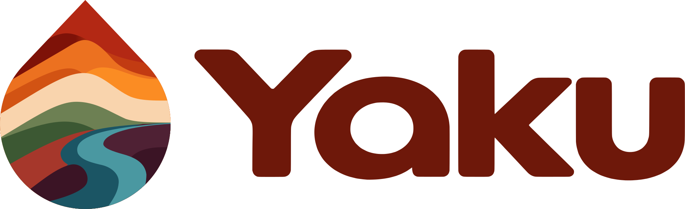
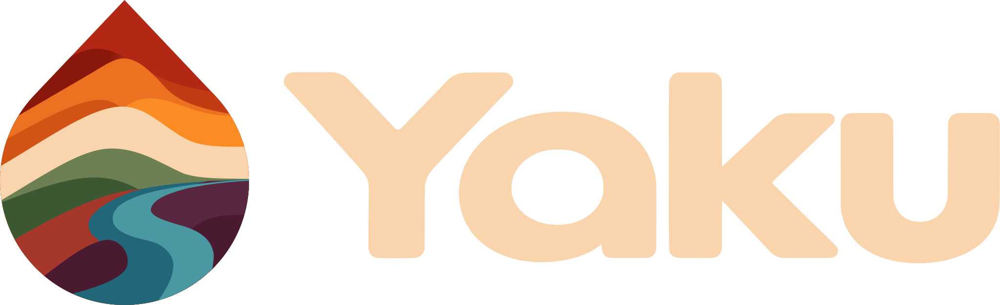
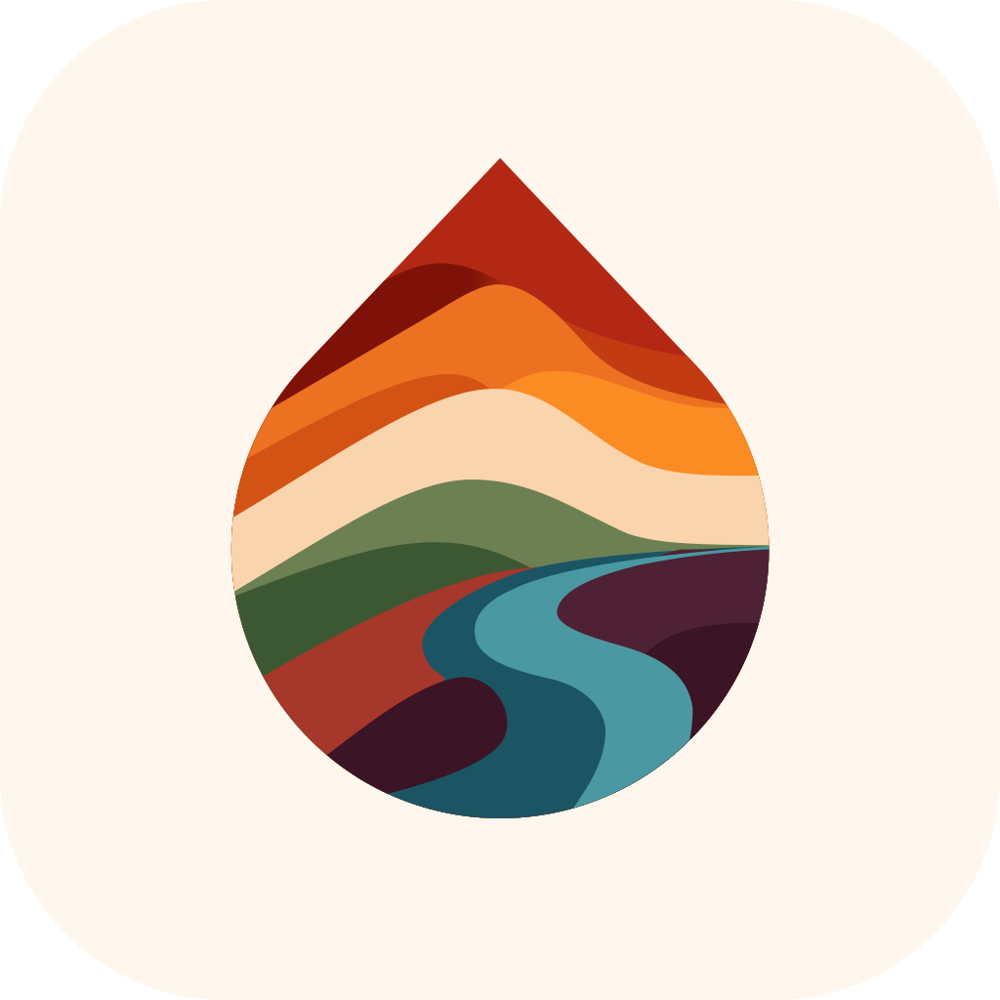
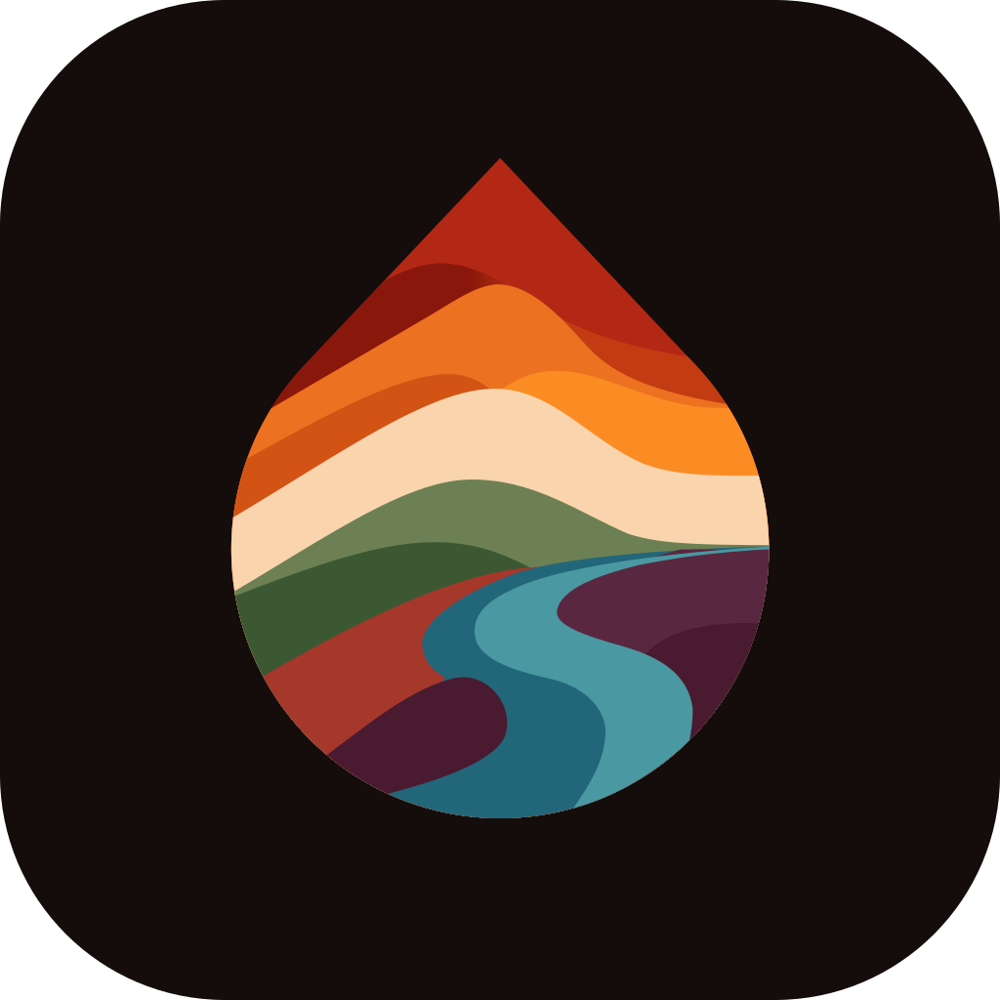
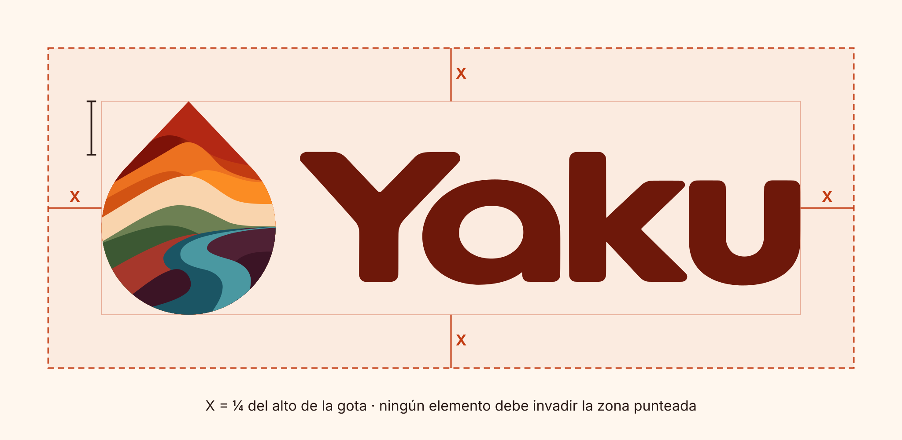
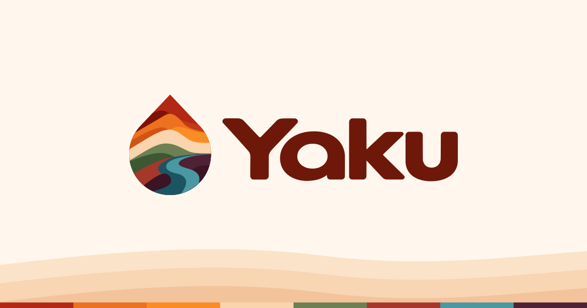
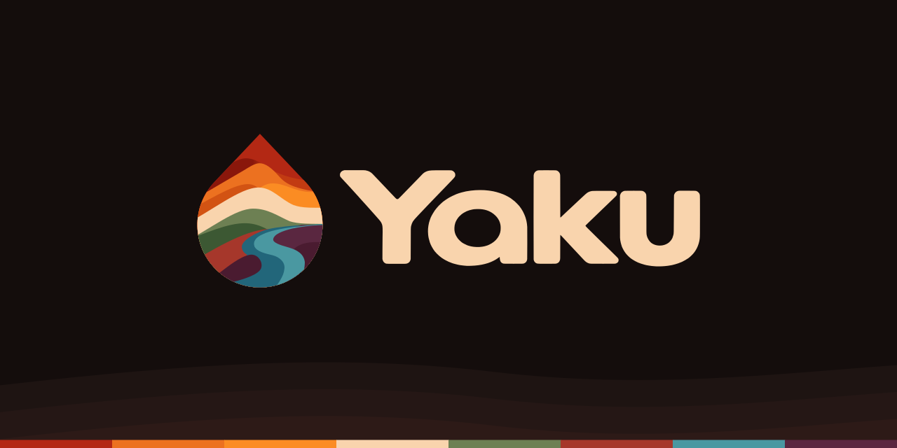
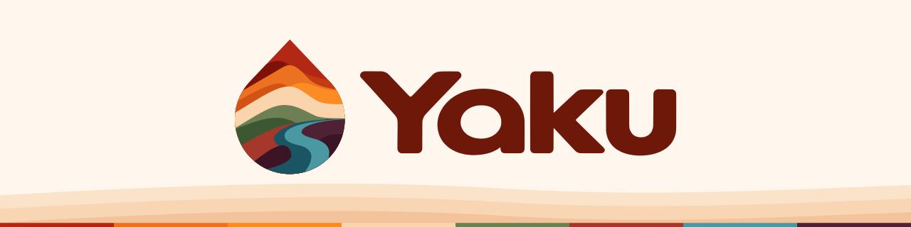
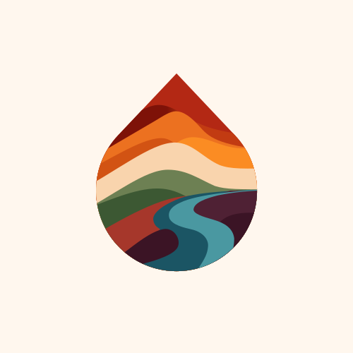
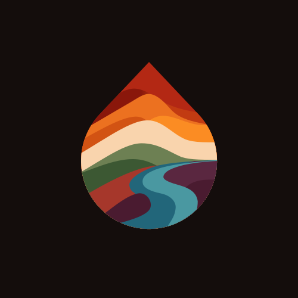

Fondo claro
Identidad visual · v1.0


Una gota que contiene un paisaje: cerros en capas, la quebrada y un río que la recorre. Todo el sistema nace de esa imagen.
01
Logo
Dos composiciones, cada una con su versión para fondo claro y fondo oscuro. Preferí siempre el SVG.


Fondo oscuro


Fondo claro


Fondo oscuro


Logotipo


Logotipo


02
Isotipo en todos los tamaños
Mostrado a tamaño real. Hasta 32 px se usa la versión simplificada: menos estratos y un río más ancho para que siga leyéndose.
💧
Tamaños disponibles en PNG transparente (cuadrado): 16 · 24 · 32 · 48 · 64 · 96 · 128 · 192 · 256 · 512 · 1024 · 2048, en
png/isotipo/light/ y png/isotipo/dark/.Transparente


Modo oscuro


App · claro



App · oscuro



03
Monocromos
Para una sola tinta: sellos, grabado láser, bordado, serigrafía o fotos. El río y los estratos quedan calados.
Negro


Blanco


Terracota


Arena


04
Paleta
Tocá un color para copiar su HEX. Terracota y Arena son los colores de interfaz; el resto vive dentro de la gota.
05
Favicons y PWA
Copiá favicon/ a la raíz pública del sitio y pegá esto en el <head>. El favicon.svg se adapta solo al modo oscuro.
<link rel="icon" href="/favicon.ico" sizes="48x48"> <link rel="icon" href="/favicon.svg" type="image/svg+xml"> <link rel="apple-touch-icon" href="/apple-touch-icon.png"> <link rel="manifest" href="/site.webmanifest"> <link rel="mask-icon" href="/safari-pinned-tab.svg" color="#6E180A"> <meta name="theme-color" content="#FFF7EE" media="(prefers-color-scheme: light)"> <meta name="theme-color" content="#140D0C" media="(prefers-color-scheme: dark)"> <meta property="og:image" content="https://TU-DOMINIO/social/yaku-og-light-1200x630.png">
Yaku — Inicio✕
Yaku — Inicio✕

07
Reglas de uso
La unidad X es ¼ del alto de la gota. Respetá ese aire alrededor del logo y los tamaños mínimos.

✕
✕
✕
✕
08
Qué cambió respecto del original
Mejoras de oficio que no alteran la identidad, pero la hacen más sólida.
- Redibujo vectorialSVG limpio en lugar de un raster con bordes irregulares: escala sin pérdida.
- Gota exactaCírculo perfecto con tangentes reales al vértice; la silueta quedó simétrica.
- Más aireSeparación gota–logotipo de 38 a 72 unidades: mejor lectura en tamaños chicos.
- Paleta con nombre14 colores fijos en lugar de tonos que variaban por el antialiasing.
- Modo oscuro realLogotipo en arena y sombras elevadas para no fundirse con el fondo.
- Favicon simplificadoMenos estratos y río más ancho: a 16 px se lee gota + río.
- Monocromo con caladosA una tinta conserva río y estratos en negativo.
- Centrado ópticoEn íconos la gota sube levemente: su masa visual está abajo.
Imágenes sociales
Open Graph, vista previa del repositorio en GitHub, banners para README y avatares.

Open Graph · 1200×630

GitHub social preview · 1280×640

Banner README · 4:1


Avatares
Pensados para recorte circular (GitHub, Discord, X, LinkedIn).